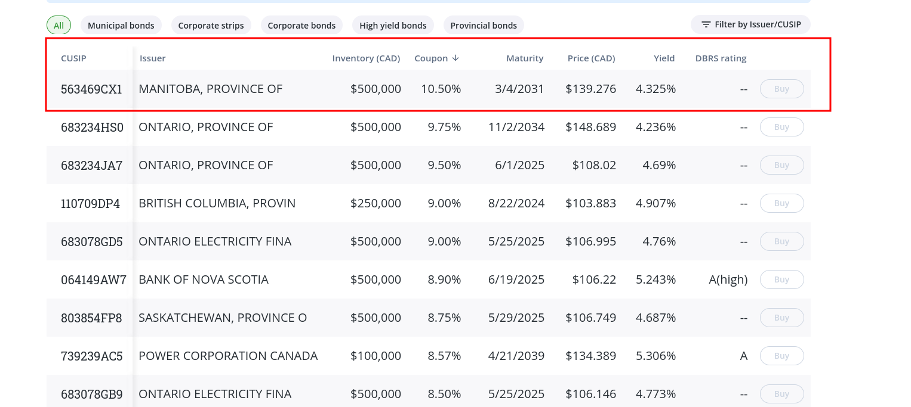

The Subtle Art of Investing
With this blog I want to start a series of posts that will cover the importance of the stock market in one's financial future. The stock market became a hobby of mine 2 years ago(at the time of writing the year is 2023). Firstly, I was really sceptical about the topic having a brief picture in mind of people calling me and trying to sell me stocks same way as a scammer is trying to get my credit card information. But after doing some due diligence I actually found out how much did I lose by not starting earlier. This first part will give you some introduction on what stock market is and why you should care.
When I start learning something new it really helps me to
understand a problem I am trying to solve. The problem in
this case is an
excessive cash you might have that looses value overtime and
the solution is a stock market. According to USNews
50% of your earnings should go to necessities, 30% to
discretionary items and 20% to savings. Fair enough let's do
some math. If you earn 10,000 Canadian dollars per
month after tax(which is considered a high income here in
a beautiful Vancouver B.C ) then at least 20% of the salary
must go into savings which is 2,000 dollars.
Great, what do we do now. Let's say you just keep the money
in your checking account which has many advantages the main
one being the liquidity. This liquid cash can help you in
case
of an emergency(which is a question of when
rather than if) or in case if you decide to make a huge
purchase(home or car).
What are the disadvantages then ? There are many but the
main
one is losing the purchasing power. Dollar today is
worth more than tomorrow. That's because the prices
for goods are always going up. The rise in prices is also
called as Inflation. According to Bank
of Canada the average inflation rate for Canadian
Dollar since 1914 is 3.06% per year meaning the cash you
hold will lose around 3% of it's buying power each year. So
now having cash doesn't sound attractive at all.
What do we
do next ? Well in my case prior to entering the Stock Market
I used to hold all the cache in the bank's saving account.
The way banks make money(at least how I understand it,
reading
financials of the banks gives my a headache so please
forgive me if my conception is wrong) is by taking a cash
from customer accounts and giving this cash to customers who
want to get
a mortgage or any other credit lines and then will repay
this credit with some interest on top. Banks can share this
profit from interests with you if you hold your money in the
saving
account. But what is a rate you can earn from
your bank ? As of time of writing Toronto
Dominion bank
gives around 1.850% if you open TD ePremium Saving
account. Other big 6 Canadian banks(RBC,BMO etc.) have the
same or even
lower rates. Pretty low I would say, but it's not
over, in Canada we have
many branchless banks that only operate online and save
money on renting office properties. One of these banks is my
favorite EQ
Bank. As of time of writing EQB give you 2.5% plus
0.5% as bonus interest making 3% in total. As a reminder we
should earn more than 3.06% to keep up with inflation. Still
not good enough. Another alternative is WealthSimple
which gives you 4% on your first 100,000 dollars and then
4.5%. I personally didn't find anything higher than what
WealthSimple can offer. Now we have a solution, we can store
our money in the bank or in the financial institution and
grow money in a rate higher than an inflation.
GIC
Another alternative to saving account is a GIC.
GIC or Guaranteed investment certificates
is a deposit investment sold by Canadian banks.
When you buy a GIC, you are basically lending the bank money
and getting paid interest in return for the favor. The
difference from saving account is that you can't withdraw
your money for a specific period of time(3 month, 1 year
etc.).
Because of the high interest rate environment, current rates
are pretty attractive. For example right now you can get
5.75% if you buy 1 year GIC from EQB.
So main advantage of GIC is a higher rate and security. In
Canada your GIC founds are CDIC insured for up to 100k
meaning even if your bank goes bankrupt, you will be repaid.
The main disadvantage I can think of is the ability of GIC
to pay high interests. As an example, on March 2022 when
interest rates were low the 1 year GIC only paid 1.75% in
interests.
Bonds
Nevertheless, I would prefer my hardly-earned money to give
me a higher rate, so I can grow my wealth faster than
inflation and then have a bigger buying power once I am
retired. Unfortunately, as we have just seen, the interest
rates from saving accounts and GIC are hardly keep up with
inflation.
The next way to earn a high interest rate is Bonds.
Bonds represent a loan from the buyer (you) to the issuer of
the bond. If it sounds complicated don't worry we will go
over it. Basically when a company needs money it has several
options to raise the capital. The most commons are
- Borrowing money from a bank(taking a debt)
- Issue stocks(we will discuss it right after bonds)
- Issue bonds
So what is a bond ?
Think about it as a document, physical or digital, you give
money to the company . Company in turn
gives you a promise that after a specified period of
time( maturity
period) company will pay you back and give you some
interest
on top. Basically similar to the saving account, but you
can't withdraw the money until the Bond's maturity. Why
would a company prefer bonds over the debt from a bank?
There are several reasons such as a variable rate. For
example right now Canada has the highest rates in the last
20 years.
It means that banks would have to increase their rates for
the existing borrowers. Let's say a company took a debt few
years ago when interest rates were close to 0 and now
company have to pay around 6% . By issuing bonds
company can decide by itself the
interest which won't be effected by the economic situation
in the country.
The next reason is the conditions from the bank. If a
company went bankrupt then it would not be able to repay the
debt so the bank must ensure that company would have enough
assets to repay the debt. By the way, company that went
bankrupt might also not be able to repay the bonds so there
is some risk involved in owning bonds comparing with GIC or
saving accounts.
Now when we have a broad idea on what bond are let's check
what
we can actually earn from them. Unlike the saving account,
it's somewhat more complicated to buy a bond, you can do it
from
companies website directly(For example go to MacDonald's
website and find a bonds section) or through the brokerage(I
will explain what the brokerage is later when we will cover
the stocks).
One of the broker that I use , namely Questrade, offers
bonds

As you can see the Province of Manitoba offers bonds with 10.5% coupon rate , yield of 4.325% and maturity date of 3/4/2031.
- Coupon rate - the annual interest rate that bond will pay
- Yield - the annual interest rate that you will earn holding the bond
- A bond's term to maturity is the length of time during which the owner will receive interest payments on the investment. When the bond reaches maturity your original payment is repaid.
One question you might have is why coupon rate is different from the yield. The reason is that those bonds are already sold to other people and are circulated in the market. Let's say Alice bought this bond from Manitoba worth of 1,000 dollars. Now instead of just holding the bond till the maturity Alice might decide to sell it to someone else. It doesn't make sense for her to sell the bond for the same 1,000 because she can simply hold it and earn 10%(100$) after the first year, so instead she can go to open market and sell this bond for 1,060 to Bob. Now after the first year Bob will earn 100$ in interest but because he paid 1060$ his actual yield is 4.325%
With bonds you might find a more attractive yields on your money. Typically , companies with a bad ratings have to give a higher coupon rate because there is bankruptcy risk involved . Would you rather own a bond from Apple with yield of 4% or bond from a new mining company with yield 10% ?
Another thing to mention is an inverse relation between interest rates and bonds. Let's say the interest rate is 2% and Alice can buy a bond with a 4% yield, after a year interest rates went up and newly issued bonds would offer 10%. If Alice decides to sell her bond to Bob will he rather buy a 4% yield bond from her or just buy a new one with a higher yield ? I think the answer is obvious.
The yields from bonds are almost identical to inflation rate. I personally don't invest in bonds because I keep all emergency founds in either savings or short term GICs(3 month).
Stocks
Now let's finally talk about the stocks